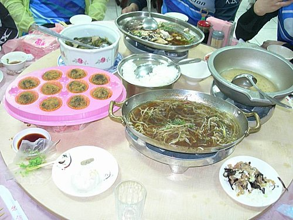

上午：走過虹橋民宿→中橫東段燕子口來回
下午：南方澳—冬山河—公館—大福—竹安—接宜4縣道--礁溪
二段路程合計全長75公里
一早從「走過虹橋」潔淨溫馨、景最優的房間內醒來，
看到窗外暖暖的陽光，
對照多日來的雨中騎乘，
剎時間，全身精神了起來……
今天上午預訂的行程是一般單車環島比較少走的太魯閣到清水斷崖，
因為經歷了昨日的累、餓、冷，加上是折返跑的行程，
所以開放大家自由選擇是否參加。
根據木白昨晚跟民宿老闆娘如玉小姐探聽的結果，
健腳如她也曾一度動搖，就更不用說全團最肉腳的我了，
因此昨晚入睡前即已說服自己……為了避免耽誤大家的行程，我願意留守民宿（還蠻正大光明的），
但看到今早灑滿一地的陽光，實在不願意窩在民宿無聊到滾來滾去，
就在良心 (不要拖累大家) 與蠢蠢欲動的心 (來都來了，不去可惜啦）的拉据中，
老天爺果然是同意讓我到太魯閣走走的……嘻，小紀隊長的輪胎竟然爆胎了！
老師，歹勢，實在不應該幸災樂禍的，
但如果不是趁健腳們留在民宿等小紀隊長換胎時，我先出發上路，
我還真是沒勇氣挑戰這段路線呢。
木白、小獅好心陪著我這個肉腳先行，
美其名為先遣部隊，實則是為了不耽誤健腳們的飆車。
果然又是標準的山路，
但累歸累，卻因一路沒有健腳在前狂飆的壓力，加上風景優美，
騎起來還算輕鬆自在，更可以沿路拍照拍到飽，
完全實現我夢想中的單車環島旅行景況。
我跟木白在涼亭處與打算留下等健腳們拍照的小獅分手後，
看著木白一路忽前忽後慢慢騎，
想也知道貼心的她已獨力負起照顧我的重擔了，
實在不忍心看她如此壓抑，
更何況就是這麼一條路，我就不相信我還能迷路到那裏，
趁她在我旁邊時，催促她先騎，
木白確認OK後，
果然像一匹脫繮野馬，急速往前竄出，
很快……就沒了人影，
唉，我要到何時才能享有這樣的騎乘速度呢?
經過布洛灣後，
馬上進入溪畔隧道(它讓我那麼驚嚇，我應該不至於記錯名吧？)，
沒想到世界聞名的觀光勝地，
隧道內的燈光竟然暗到令人幾乎伸手不見五指，
偏偏這時後方接近的砂石車聲宛如萬馬奔騰而來，
嚇得我差點撞上旁邊的隧道牆，
硬撐了2部砂石車後，實在無法繼續騎，利用沒車空檔，
跳下車迅速打開前、後車燈，
此時才發現，其實隧道內的燈光沒那麼暗，
哈哈，之所以暗……是因為我忘了拿下太陽眼鏡啦！
經過這段隧道驚魂後，一路便自由自在地來到燕子口，
雖然不是假日，但遊客也不少，
木白已經在那裏吃起了從民宿帶出來的蘋果，
因為小獅電話指示我們在燕子口等大家，
所以我跟木白就沒有繼續前進了。
難得我竟然可以在前方幫大家拍抵達的照片，
當然不能錯過這個好機會，
準備好相機後，就守在燕子口入口處，
等著拍下隊友們的英姿，
第一名是騎著小徑前來的吳大！（咦?!不是說好說他叫吳師傅的嗎？怎麼還有「吳大」，不過，吳大真的比較好聽，小獅，還不快跟著改？）
老師，您是在適應新輪胎嗎？
貓哥，我知道你一定是昨天在18K又冷又餓等怕了，所以今天無論如何再也不肯衝過頭，
否則你們2位怎麼會讓吳大專美於前呢？
因為時間已經接近中午，
還要預留返回民宿打包的時間，
我們決定在燕子口就折返，
於是遵照小獅的指示，在橋頭與不會飛的燕子合照後，
輕快地划著下坡風經過長春祠來到太魯閣國家公園入口牌樓處，
依慣例當然是得拍一下到此一遊的團圓照囉，
這次請來的攝影大師是桃園來的單車客喲。
回到民宿，大家把昨晚民宿幫忙脫水、今早太陽公公幫忙曬乾的衣服收拾妥當，
在門口把行李放上補給車，再由吳大把大家的愛駒全部上到車架，
我們全員才上車，
正式告別「走過虹橋」這個美麗的民宿，踏上我們蘇花搭車行。
在離開花蓮之前，
大家惦記著昨晚沒有吃到的花蓮曾記現做手工麻糬，
所以就全車先開往昨晚路過看到的曾記麻糬分店買了2盒到車上分享。 來到清水斷崖時，大家決定下去走走，順便補足今早未竟的行程（原本預訂騎到清水斷崖），
沒想到從清水斷崖上車後，竟然遇到公路整修交通管制，
大家只好三三兩兩下車趴趴走，有的拍照、有的向前方車輛司機詢問路況、管制，
等到通車啟程，大家開始一路昏睡，醒來時，已經快接近南方澳漁港，
此時看著坡坡相連的蘇花公路，
不禁暗自慶幸不必騎這段路（此時真的沒想到還有個更酷的北宜）。
終於在經過數小時後(因為睡著了，沒記時間)，我們來到蘇澳港，
依著GPS的指示，我們選擇富美活海產飽餐一頓。
雖然富美店家非常熱心地建議我們一定要繞他們南方澳一圈，看看他們有名的豆腐岬，
但小紀隊長及小獅執行秘書經過評估後，
擔心我們來不及在天黑之前到達溫泉鄉～礁溪，
最後還是決定直接上路……繼續我們的單車環島行。
騎著騎著，我們來到了宜蘭縣境、看到了傳統藝術中心，
不知是否大家惦著吳大介紹的超有效捷安特屁股軟膏（吳大沒說清楚是什麼，只好姑且這麼稱之）或是在找洗手間，
大家一看到有捷安特的租車站，立刻一擁而上，
這裏雖然沒有賣大家急需的屁股軟膏，洗手間也不在此處，
但大男孩、小女生店員相當親切，
大男孩忙著幫大家檢查愛駒，
小女生則負責陪大家哈啦、邀大家照相，
我們也趁機在這裏拍了大合照。
這家捷安特租車站貼了一張招募貴婦單車環島團的廣告，
或許應該參加這種團，才能實現美美地、悠閒地環島的美夢吧。
騎在冬山河邊自行車道，
在河畔青青草地的吸引下，
大家紛紛帶著單車下到河岸邊拍照……嗯，果然在這裏大家又活
了起來，「破司」（借用山哥的詞）非常多。
離開冬山河後，小獅非常堅持要去找尋傳說中的濱海自行車道，
但問了很多人，都沒人確切知道如何到達，
直到我們都已經騎在這條濱海自行車道上了，
如果不是偶而一見的自行車道說明，
真的很難令人相信這是一條自行車道，
要找到它，得穿過荒無人煙的小徑，
就算找到了，也是兩旁荒草漫漫，人更是沒有幾個，
一路騎著除了雜草，完全看不見海，實在無從感受濱海的感覺(因為一路趕路，已經忘了有無聽到海聲)，
不知為何叫做濱海自行車道？
眼看天越來越黑，大家正在議論著該在那裏終止時，
小獅獨排眾議，要大家再繼續騎一段路試試，
大家只好發揮死馬當活馬玩的力量繼續騎，
沒想到前方健腳竟然傳來喜悅的哀嚎，
原來，在短短不到幾公尺遠的前方，
竟有著令人意想不到的美景……龜山島是如此清晰地出現在大家面前！
大家在一陣慌亂地搶拍，兼飽覽了龜山島的全景後，
因為天又更黑了一些些了，已經到了得開前、後車燈的時刻，
我們再次展開越來越緊急的行程（小紀隊長曾下達最高指令：不夜騎），
小獅沿路憑著直覺兼問路，帶著我們狂飆，
果然很快就到達我們今晚的落腳處……宜蘭礁溪三光溫泉會館。
分配好房間，大家忙著把行李丟包時，
吳大非常好心地幫大家沖洗愛駒，
從房間走出來要去吃晚餐時，看到愛駒閃閃發亮的樣子，真是美呆了，
感謝吳大！
嗯，有一句話說，什麼東東變不出新把戲，
我跟小獅就是這樣，
每次來礁溪，除了滷之鄉，根本想不出第二家用餐地點，
所以，我們這次還是依樣畫胡蘆，又把大家帶到了滷之鄉。
用過餐後，大家開始逛土產店，雖然有推薦店家，
但大家還是憑直覺進了一家宜蘭餅店，
不知是否白天身體的疲憊，造成晚上喜歡花錢舒壓，
大家又是一陣兵慌馬亂、失去理智的採購，
最後，慢慢地買夠本的隊友先閃人，漸漸地就剩三三兩兩漫步在返回三光會館的礁溪街頭，
最後大家都回到小獅號稱便宜又大碗的二光加一光溫泉會館泡湯，
以便迎接明天硬斗的北宜公路。
太魯閣橋……這是站在「走過虹橋」的方向看它，我們昨晚就是穿過這座橋到達「走過虹橋」!
走過虹橋門口及吳大的小徑
走過虹橋房間真的很優，這張……嗯，大家得倒帶發揮一下想像
小紀隊長的寶馬正在換胎
這是在走過虹橋的右側，也是我們太魯閣行的起點
經過砂卡礑隧道
不是視覺效果，這真的是上坡路
瞧，多悠哉啊……這是小獅跟我們分手的涼亭
到現在還想不透，小獅為什麼要叫我們擺這個姿勢？
帥氣、有力的小獅旁邊就是恐怖的溪畔隧道
出來就是燕子口了
在燕子口大合照
享受燕子口單車步道的舒適
看清楚了沒
我們的折返點……不會飛的燕子
長春祠
太魯閣入口
好吃的曾記麻糬
全部上車出發了
清水斷崖
我們在南方澳午餐的地點
富美海產店的菜……嗯，餓極了，吃飽才想到要拍照，所以只剩最後送來的甜點是完整的

吃飽上路了
宜蘭傳藝中心

宜蘭傳藝中心捷安特租車站(旁邊就是可愛的租車站小女生)

冬山河畔自行車道
冬山河畔之瘋狂大拍照之代表作
宜蘭濱海自行車道之發現龜山島篇

迷戀龜山島直到天色漸暗篇
宜蘭滷之鄉……我們的晚餐